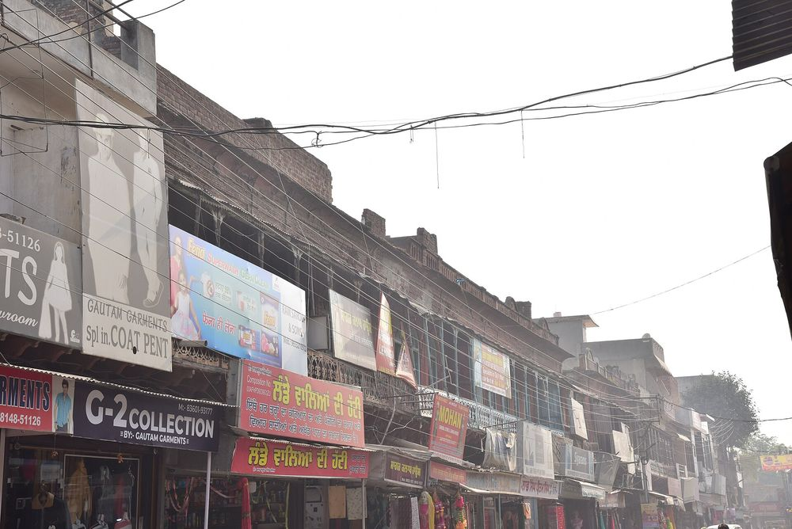
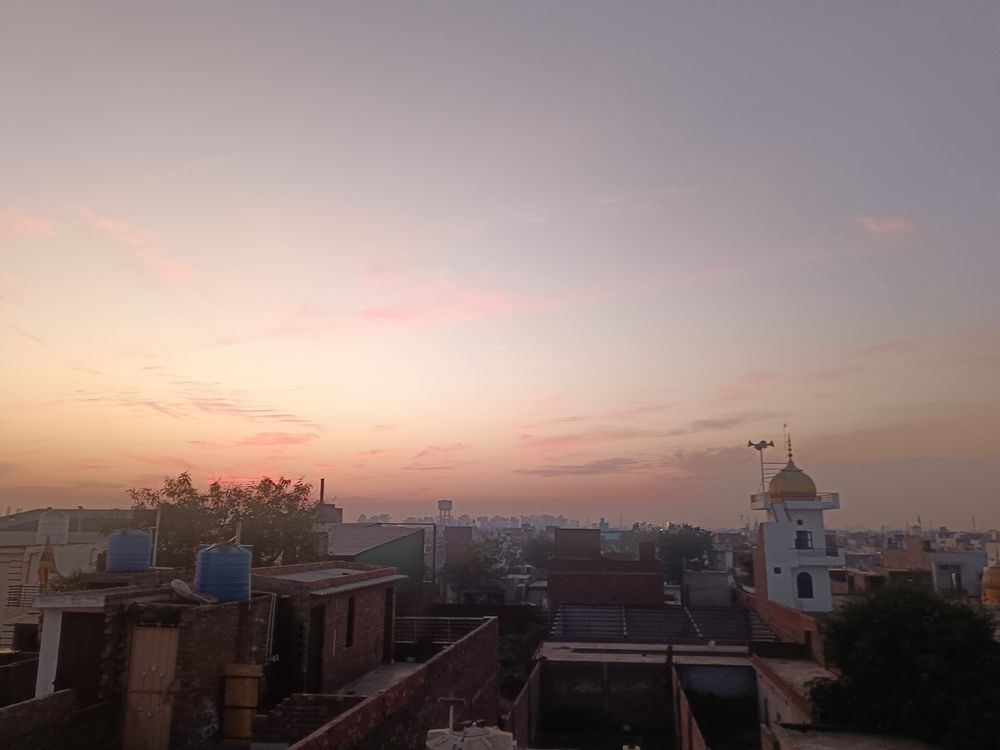

ਸਾਨੂੰ ਲੱਭੋ
Find us at Barota Chowk
Barota Chowk, in front of Sajan Tailor, Malaudh, Ludhiana district, Punjab 141119
What to look for
- A black and navy board with yellow Gurmukhi lettering and the phone number on it
- A big tree over the cart, with a black tarp roof under it
- A glass counter with trays of eggs on top
- Printed food photos along the front panels and on a board at the side
- Sajan Tailor behind it
The cart is at Barota Chowk, in front of Sajan Tailor.
Getting there
Malaudh is on the Ludhiana-Malerkotla Road, about 40 km from Ludhiana.
The cart is at Barota Chowk, in front of Sajan Tailor. Use the map pin above and look for the board.


